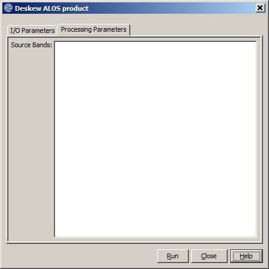
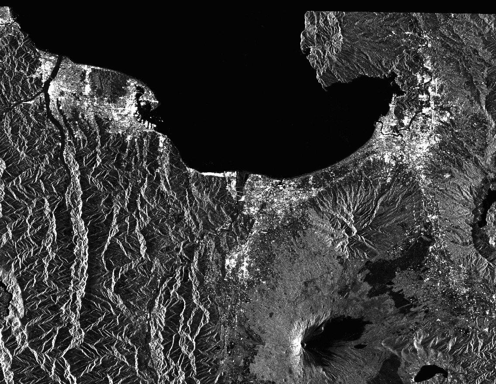

| ALOS Deskewing |
|
For ALOS L1.1 data, the annotated times are not zero Doppler times, i.e. the data is distributed in squinted geometry. Therefore, the data generally needs to be deskewed to transfer the data into a zero Doppler like geometry before applying standard SAR processing.
Note: For ALOS-2 products, deskewing is not needed because products are already in zero Doppler geometry.

The following
parameter is used by the Operator:
Below is an example of a deskewed ALOS product in which all the pixels have been adjusted to a more zero Doppler like geometry. Notice the gap along the top of the image.

The operator source code refers to the ALOS PALSAR FAQ (ALOS-PALSAR-FAQ-001, ESRIN Contract No. 20700/07/I-OL, IDEAS QC PALSAR Team) for the deskewing approach. This document could not be independently checked.
GPT operator: ALOS-Deskewing. Generated from the operator source; parameter names are those used in GPT and graph XML.
| Parameter | Type | Default | Allowed values | Unit | Description |
|---|---|---|---|---|---|
sourceBands | String[] | The list of source bands. | |||
demName | String | Copernicus 30m Global DEM | The digital elevation model. |